Voltage-to-Current Converter
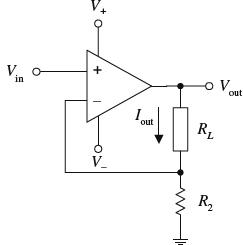
Here is a simple current source whose output current is determined by an input voltage applied to the noninverting terminal of the op amp. The output current and voltage are determined by the following expressions:
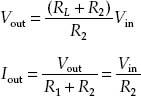
Vin can be set with a voltage divider.
FIGURE 8.38
Precision Current Source
Here, a precision current uses a JFET to drive a bipolar output transistor used to sink current through a load. Unlike the preceding current source, this circuit is less susceptible to output drift. Use of the JFET helps achieve essentially zero bias current error (a single bipolar output stage will leak base current). This circuit is accurate for output currents larger than the JFET’s IDS(on) and provided Vin is greater than 0 V. For large currents, the FET-bipolar combination can be replaced with a Darlington transistor, provided its base current does not introduce significant error. The output current or load current is determined by
Iload = Vin/R2
R2 acts as an adjustment control. Additional compensation may be required depending on the load reactance and the transistors’ parameters. Make sure to use transistors of sufficient power ratings to handle the load current in question.
FIGURE 8.39
Current-to-Voltage Converter
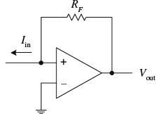
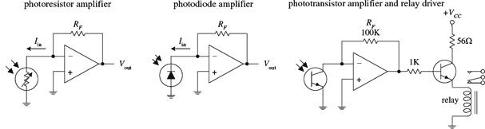
The circuit shown here transforms a current into a voltage. The feedback resistor RF helps establish a voltage at the inverting input and controls the swing of the output. The output voltage for this circuit is given by
Vout = IinRF
The light-activated circuits shown below use this principle to generate an output voltage that is proportional to the amount of input current drawn through the light sensor.
FIGURE 8.40
Overvoltage Protection (Crowbar)
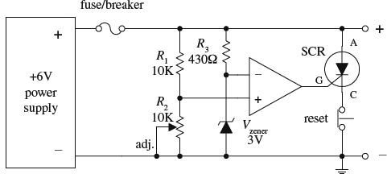
This circuit acts as a fast-acting overvoltage protection control used to protect sensitive loads from voltage surges generated in the power supply. Initially, let’s assume that the supply is doing what it should—generating a constant +6 V. In this case, the voltage applied to the op amp’s noninverting input is set to 3 V (by means of the R1,R2 voltage divider—the pot provides fine-tuning adjustment). At the same time, the inverting input is set to 3 V by means of the 3-V zener diode. The op amp’s differential input voltage in this case is therefore zero, making the op amp’s output zero (op amp acts as a comparator). With the op amp’s output zero, the SCR is off, and no current will pass from anode (A) to cathode to ground. Now, let’s say there’s a sudden surge in the supply voltage. When this occurs, the voltage at the noninverting input increases, while the voltage at the inverting input remain at 3 V (due to the 3-V zener). This causes the op amp’s output to go high, triggering the SCR on and diverting all current from the load to ground in the process. As a result, the fuse (breaker) blows and the load is saved. The switch is opened to reset the SCR.
FIGURE 8.41
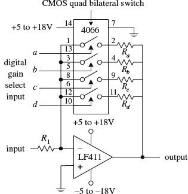
This circuit is simply an inverting amplifier whose feedback resistance (gain) is selected by means of a digitally controlled bilateral switch (e.g., CMOS 4066). For example, if the bilateral switch’s input a is set high (+5 to +18 V) while its b through d inputs are set low (0 V), only resistor Ra will be present in the feedback loop. If you make inputs a through d high, then the effective feedback resistance is equal to the parallel resistance of resistors Ra through Rd. Bilateral switches are discussed in greater detail in Chap. 12.
FIGURE 8.42
Sample-and-Hold Circuits
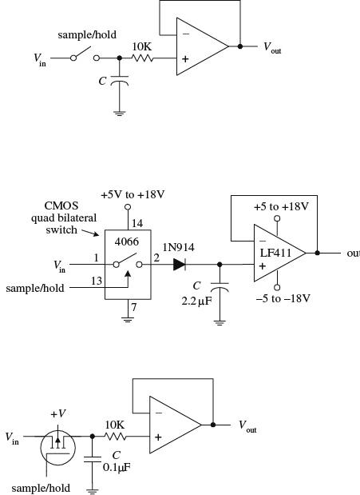
Sample-and-hold circuits are used to sample an analog signal and hold it so that it can be analyzed or converted into, say, a digital signal at one’s leisure. In the first circuit, a switch acts as a sample/ hold control. Sampling begins when the switch is closed and ends when the switch is opened. When the switch is opened, the input voltage present at that exact moment will be stored in C. The op amp acts as a unity-gain amplifier (buffer), relaying the capacitor’s voltage to the output but preventing the capacitor from discharging (recall that ideally, no current enters the inputs of an op amp). The length of time a sample voltage can be held varies depending on how much current leaks out of the capacitor. To minimize leakage currents, use op amps with low input-bias currents (e.g., FET op amps). In the other two circuits, the sample/hold manual switch is replaced with an electrically controlled switch—the left-most circuit uses a bilateral switch, while the right-most circuit uses a MOSFET. Capacitors best suited for sample/hold applications include Teflon, polyethylene, and polycarbonate dielectric capacitors.
FIGURE 8.43
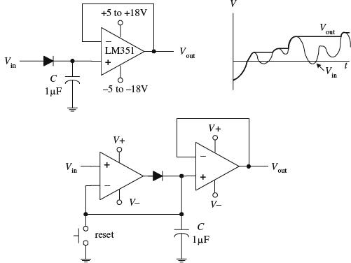
The circuits shown here act as peak detectors—they follow an incoming voltage signal and store its maximum voltage within C (see graph). The op amp in the upper circuit acts as a buffer—it “measures” the voltage in C, outputs that voltage, and prevents C from discharging. The diode also prevents the capacitor from discharging when the input drops below the peak voltage stored on C. The second circuit is a more practical peak detector. The additional op amp makes the detector more sensitive; it compensates for the diode voltage drop (around 0.6 V) by feeding back C’s voltage to the inverting terminal. In other words, it acts as an active rectifier. Also, this circuit incorporates a switch to reset the detector. Often, peak detectors use a FET in place of the diode and use the FET’s gate as a reset switch. Reducing the capacitance of C promotes faster response times for changes in Vin.
FIGURE 8.44
Noninverting Clipper Amplifier
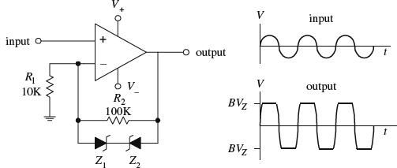
This simple amplifier circuit acts to clip both positive and negative going portions of the output signal. The clipping occurs in the feedback network whenever the feedback voltage exceeds a zener diode’s breakdown voltage. Removing one of the zener diodes results in partial clipping (either positive or negative going, depending on which zener diode is removed). This circuit can be used to limit overloads within audio amplifiers and as a simple sinewave-to-squarewave converter.
FIGURE 8.45
Active Rectifiers
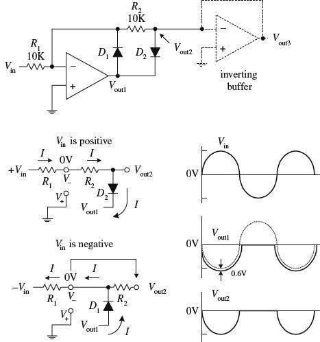
A single diode acts to rectify a signal—however, at the cost of a diode drop (e.g., 0.6 V). Not only does this voltage drop lower the level of the output, but it also makes it impossible to rectify low-level signals below 0.6 V. A simple solution to this problem is to construct an active rectifier like the one shown here. This circuit acts as an ideal rectifier, in so far as it rectifies signals all the way down to 0 V. To figure out how this circuit works, let’s apply the rules we have learned. If Vin is positive, current I will flow in the direction shown in the simplified network shown below the main circuit. Since V+ is grounded, and since we have feedback, V− = V+ = 0 V (rule 4), we can use Kirchhoff’s voltage law to find Vout1, Vout2, and finally, Vout3: 0 V − IR2 − 0.6 V − Vout1 = 0
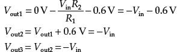
Notice that there is no 0.6-V drop present at the final output; however, the output is inverted relative to the input. Now, if Vin is negative, the output will source current through D1 to bring V− to 0 V (rule 4). But since no current will pass through R2 (due to buffer), the 0 V at V− is present at Vout2 and likewise present at Vout3. The buffer stage is used to provide low output impedance for the next stage without loading down the rectifier stage. To preserve the polarity of the input at the output, an inverting buffer (unity-gain inverter) can be attached to the output.
FIGURE 8.46
Filters
A filter is a circuit that is capable of passing a specific range of frequencies while blocking other frequencies. As you discovered in Chap. 2, the four major types of filters include low-pass filters, high-pass filters, bandpass filters, and notch filters (or band-reject filters). A low-pass filter passes low-frequency components of an input signal, while a high-pass filter passes high-frequency components. A bandpass filter passes a narrow range of frequencies centered around the filter’s resonant frequency, while a notch filter passes all frequencies except those within a narrow band centered around the filter’s resonant frequency.
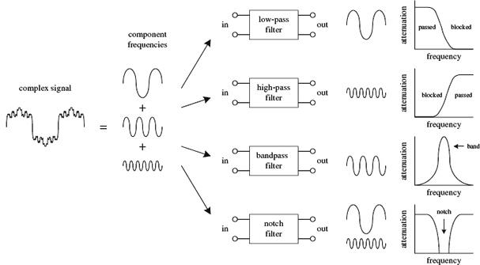
FIGURE 9.1
Filters have many practical applications in electronics. For example, within a dc power supply, filters can be used to eliminate unwanted high-frequency noise present within the ac line voltage, and they act to flatten out pulsing dc voltages generated by the supply’s rectifier section. In radio communications, filters make it possible for a radio receiver to provide the listener with only the desired signal while rejecting all others. Likewise, filters allow a radio transmitter to generate only one signal while attenuating other signals that might interfere with different radio transmitters’ signals. In audio electronics, filter networks called crossover networks are used to divert low audio signals to woofers, middle-range frequencies to midrange speakers, and high frequencies to tweeters. A high-pass filter is often used to eliminate 60 Hz mains hum from audio circuits. The list of filter applications is extensive.
There are two filter types covered in this chapter, namely, passive filters and active filters. Passive filters are designed using passive elements (e.g., resistors, capacitors, and inductors) and are most responsive to frequencies between around 100 Hz and 300 MHz. (The lower frequency limit results from the fact that at low frequencies the capacitance and inductance values become exceedingly large, meaning prohibitively large components are needed. The upper frequency limit results from the fact that at high frequencies parasitic capacitances and inductances wreak havoc.) When designing passive filters with very steep attenuation falloff responses, the number of inductor and capacitor sections increases. As more sections are added to get the desired response, greater is the chance for signal loss to occur. Also, source and load impedances must be taken into consideration when designing passive filters.
Active filters, unlike passive filters, are constructed from op amps, resistors, and capacitors—no inductors are needed. Active filters are capable of handling very low frequency signals (approaching 0 Hz), and they can provide voltage gain if needed (unlike passive filters). Active filters can be designed to offer comparable performance to LC filters, and they are typically easier to make, less finicky, and can be designed without the need for large-sized components. Also, with active filters, a desired input and output impedance can be provided that is independent of frequency. One major drawback with active filters is a relatively limited high-frequency range. Above around 100 kHz or so, active filters can become unreliable (a result of the op amp’s bandwidth and slew-rate requirements). At radiofrequencies, it is best to use a passive filter.
9.1 Things to Know Before You Start Designing Filters
When describing how a filter behaves, a response curve is used, which is simply an attenuation (Vout/Vin) versus frequency graph (see Fig. 9.2). As you discovered in Chap. 2, attenuation is often expressed in decibels (dB), while frequency may be expressed in either angular form ω (expressed in rad/s) or conventional form f (expressed in Hz). The two forms are related by ω = 2πf. Filter response curves may be plotted on linear-linear, log-linear, or log-log paper. In the case of log-linear graphs, the attenuation need not be specified in decibels.
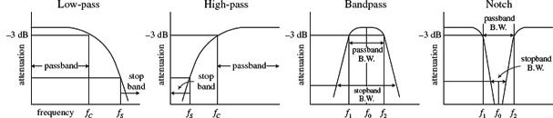
FIGURE 9.2
Here are some terms that are commonly used when describing filter response:
−3-dB Frequency (f3dB). This represents the input frequency that causes the output signal to drop to −3 dB relative to the input signal. The −3-dB frequency is equivalent to the cutoff frequency—the point where the input-to-output power is reduced by one-half or the point where the input-to-output voltage is reduced by 1/ . For low-pass and high-pass filters, there is only one −3-dB frequency. However, for bandpass and notch filters, there are two −3-dB frequencies, typically referred to as f1 and f2.
. For low-pass and high-pass filters, there is only one −3-dB frequency. However, for bandpass and notch filters, there are two −3-dB frequencies, typically referred to as f1 and f2.
Center frequency (f0). On a linear-log graph, bandpass filters are geometrically symmetrical around the filter’s resonant frequency or center frequency—provided the response is plotted on linear-log graph paper (the logarithmic axis representing the frequency). On linear-log paper, the central frequency is related to the −3-dB frequencies by the following expression:
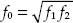
For narrow-band bandpass filters, where the ratio of f2 to f1 is less than 1.1, the response shape approaches arithmetic symmetry. In this case, we can approximate f0 by taking the average of −3-dB frequencies:
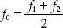
Passband. This represents those frequency signals that reach the output with no more than −3 dB worth of attenuation.
Stop-band frequency (fs). This is a specific frequency where the attenuation reaches a specified value set by the designer. For low-pass and high-pass filters, the frequencies beyond the stop-band frequency are referred to as the stop band. For bandpass and notch filters, there are two stop-band frequencies, and the frequencies between the stop bands are also collectively called the stop band.
Quality factor (Q). This represents the ratio of the center frequency of a bandpass filter to the −3-dB bandwidth (distance between −3-dB points f1 and f2):
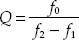
For a notch filter, use Q = (f2 − f1)/f0, where f0 is often referred to as the null frequency.
9.2 Basic Filters
In Chap. 2 you discovered that by using the reactive properties of capacitors and inductors, along with the resonant behavior of LC series and parallel networks, you could create simple low-pass, high-pass, bandpass, and notch filters. Here’s a quick look at the basic filters covered in Chap. 2:
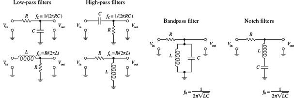
FIGURE 9.3
Now, all the filters shown in this figure have a common limiting characteristic, namely, a shallow 6-dB per octave falloff response beyond the −3-dB point(s). (You can prove this to yourself by going back to Chap. 2 and fiddling with the equations.) In certain noncritical applications, a 6-dB per octave falloff works fine, especially in cases where the signals you want to remove are set well beyond the −3-dB point. However, in situations where greater frequency selectivity is needed (e.g., steeper falloffs and flatter passbands), 6-dB per octave filters will not work. What is needed is a new way to design filters.
Making Filters with Sharper Falloff and Flatter Passband Responses
One approach used for getting a sharper falloff would be to combine a number of 6-dB per octave filters together. Each new section would act to filter the output of the preceding section. However, connecting one filter with another for the purpose of increasing the “dB per octave” slope is not as easy as it seems and in fact becomes impractical in certain instances (e.g., narrow-band bandpass filter design). For example, you have to contend with transient responses, phase-shift problems, signal degradation, winding capacitances, internal resistances, magnetic noise pickup, etc. Things can get nasty.
To keep things practical, what I will do is skip the hard-core filter theory (which can indeed get very nasty) and simply apply some design tricks that use basic response graphs and filter design tables. To truly understand the finer points of filter theory is by no means trivial. If you want in-depth coverage of filter theory, refer to a filter design handbook. (A comprehensive handbook written by Zverck covers almost everything you would want to know about filters.)
Let’s begin by jumping straight into some practical filter design examples that require varying degrees of falloff response beyond 6 dB per octave. As you go through these examples, important new concepts will surface. First, I will discuss passive filters and then move on to active filters.
9.3 Passive Low-Pass Filter Design
Suppose that you want to design a low-pass filter that has a f3dB = 3000 Hz (attenuation is −3 dB at 3000 Hz) and an attenuation of −25 dB at a frequency of 9000 Hz—which will be called the stop frequency fs. Also, let’s assume that both the signal-source impedance Rs and the load impedance RL are equal to 50 Ω. How do you design the filter?
Step 1 (Normalization)
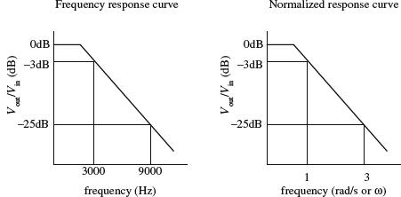
First, make a rough attenuation versus frequency graph to give yourself a general idea of what the response looks like (see far-left figure). Next, you must normalize the graph. This means that you set the −3-dB frequency f3dB to 1 rad/s. The figure to the near left shows the normalized graph. (The reason for normalizing becomes important later on when you start applying design tricks that use normalized response curves and tables.) In order to determine the normalized stop frequency, simply use the following relation, which is also referred to as the steepness factor:
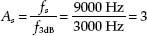
This expression tells you that the normalized stop frequency is three times larger than the normalized −3-dB point of 1 rad/s. Therefore, the normalized stop frequency is 3 rad/s.
FIGURE 9.4
Step 2 (Pick Response Curve)
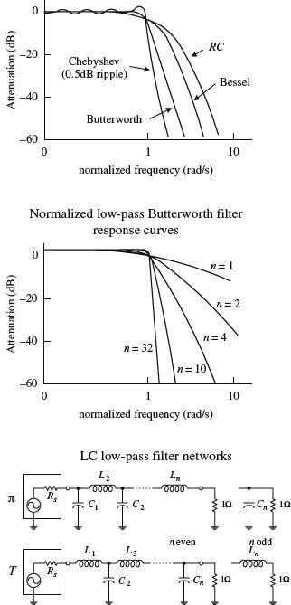
Next, you must pick a filter response type. Three of the major kinds to choose from include the Butterworth, Chebyshev, and Bessel. Without getting too technical here, what is going on is this: Butterworth, Chebyshev, and Bessel response curves are named after individuals who were able to model LC filter networks after a mathematical function called the transfer function, given here:
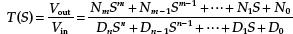
The N’s in the equation are the numerator’s coefficients, the D’s are the denominator’s coefficients, and S = jω (j = 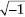, ω = 2πf). The highest power n in the denominator is referred to as the order of the filter or the number of poles. The highest power m in the numerator is referred to as the number of zeros. Now, by manipulating this function, individuals (e.g., Butterworth, Chebyshev, and Bessel) were able to generate unique graphs of the transfer function that resembled the attenuation response curves of cascaded LC filter networks. What is important to know, for practical purposes, is that the number of poles within the transfer function correlates with the number of LC sections present within the cascaded filter network and determines the overall steepness of the response curve (the decibels per octave). As the number of poles increases (number of LC sections increases), the falloff response becomes steeper. The coefficients of the transfer function influence the overall shape of the response curve and correlate with the specific capacitor and inductor values found within the filter network. Butterworth, Chebyshev, and Bessel came up with their own transfer functions and figured out what values to place in the coefficients and how to influence the slope of the falloff by manipulating the order of the transfer function. Butterworth figured out a way to manipulate the function to give a maximally flat passband response at the expense of steepness in the transition region between the passband and the stop band. Chebyshev figured out a way to get a very steep transition between the passband and stop band at the expense of ripples present in the passband, while Bessel figured out a way to minimize phase shifts at the expense of both flat passbands and steep falloffs. Later I will discuss the pros and cons of Butterworth, Chebyshev, and Bessell filters. For now, however, let’s concentrate on Butterworth filters.
FIGURE 9.5
Step 3 (Determine the Number of Poles Needed)
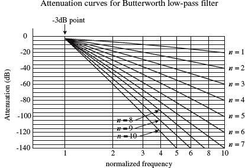
Continuing on with our low-pass filter problem, lef’s choose the Butterworth design approach, since it is one of the more popular designs used. The next step is to use a graph of attenuation versus normalized frequency curves for Butterworth low-pass filters, shown in the figure. (Response curves like this are provided in filter handbooks, along with response curves for Chebyshev and Bessel filters.) Next, pick out the single response curve from the graph that provides the desired −25 dB at 3 rad/s, as stated in the problem. If you move your finger along the curves, you will find that the n = 3 curve provides sufficient attenuation at 3 rad/s. Now, the filter that is needed will be a third-order low-pass filter, since there are three poles. This means that the actual filter that you will construct will have three LC sections.
FIGURE 9.6
Step 4 (Create a Normalized Filter)
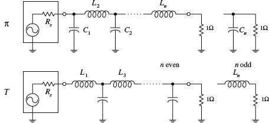
Now that you have determined the order of the filter, move on to the next step—creating a normalized LC filter circuit. (This circuit will not be the final filter circuit you will use—it will need to be altered.) The circuit networks that are used in this step take on either a π or the T configuration, as shown in the figure. If the source and load impedances match, either configuration can be used—though a π network is more attractive because fewer inductors are needed. However, if the load impedance is greater than the source impedance, it is better to use T configuration. If the load impedance is smaller than the source impedance, it is better to use the π configuration. Since the initial problem stated that the source and load impedances were both 50 Ω, choose the π configuration. The values of the inductors and capacitors are given in Table 9.1. (Filter handbooks will provide such tables, along with tables for Chebyshev and Bessel filters.) Since you need a third-order filter, use the values listed in the n = 3 row. The normalized filter circuit you get in this case is shown in Fig. 9.8.
FIGURE 9.7
TABLE 9.1 Butterworth Active Filter Low-Pass Values
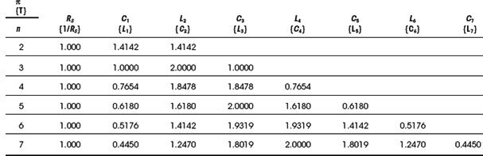
Note: Values of Ln and Cn are for a 1-Ω load and −3-dB frequency of 1 rad/s and have units of H and F. These values must be scaled down. See text.
As mentioned a moment ago, this circuit is not the final circuit that we’ll use. That is, the component values listed here will not work! This is so because the graphs and tables you used to get to this point used the normalized frequency within them. Also, you haven’t considered the effects of the source and load impedances. In order to construct the final working circuit, you must frequency and impedance scale the component values listed in the circuit in Fig. 9.8. This leads us to the next step.
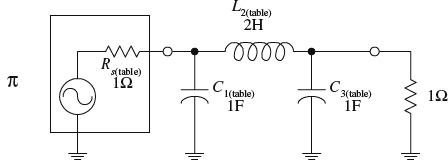
FIGURE 9.8
Step 5 (Frequency and Impedance Scaling)
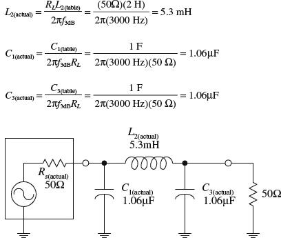
To account for impedance matching of the source and load, as well as getting rid of the normalized frequency, apply the following frequency and impedance scaling rules. To frequency scale, divide the capacitor and inductor values that you got from the table by ω = 2πfc. To impedance scale, multiply resistor and inductor values by the load impedance and divide the capacitor values by the load impedance. In other words, use the following two equations to get the actual component values needed:
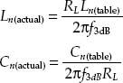
The calculations and the final low-pass circuit are shown in the figure.
FIGURE 9.9
9.4 A Note on Filter Types
It was briefly mentioned earlier that Chebyshev and Bessel filters could be used instead of Butterworth filters. To design Chebyshev and Bessel filters, you take the same approach you used to design Butterworth filters. However, you need to use different low-pass attenuation graphs and tables to come up with the component values placed in the π and T LC networks. If you are interested in designing Chebyshev and Bessel filters, consult a filter design handbook. Now, to give you a better understanding of the differences between the various filter types, the following few paragraphs should help.
Butterworth filters are perhaps the most popular filters used. They have very flat frequency response in the middle passband region, although they have somewhat rounded bends in the region near the −3-dB point. Beyond the −3-dB point, the rate of attenuation increases and eventually reaches n × 6 dB per octave (e.g., n = 3, attenuation = 18 dB/octave). Butterworth filters are relatively easy to construct, and the components needed tend not to require as strict tolerances as those of the other filters.
Chebyshev filters (e.g., 0.5-dB ripple, 0.1-dB ripple Chebyshev filter) provide a sharper rate of descent in attenuation beyond the −3-dB point than Butterworth and Bessel filters. However, there is a price to pay for the steep descent—the cost is a ripple voltage within the passband, referred to as the passband ripple. The size of the passband ripple increases with order of the filter. Also, Chebyshev filters are more sensitive to component tolerances than Butterworth filters.
Now, there is a problem with Butterworth and Chebyshev filters—they both introduce varying amounts of delay time on signals of different frequencies. In other words, if an input signal consists of a multiple-frequency waveform (e.g., a modulated signal), the output signal will become distorted because different frequencies will be displaced by different delay times. The delay-time variation over the passband is called delay distortion, and it increases as the order of the Butterworth and Chebyshev filters increases. To avoid this effect, a Bessel filter can be used. Bessel filters, unlike Butterworth and Chebyshev filters, provide a constant delay over the passband. However, unlike the other two filters, Bessel filters do not have as sharp an attenuation falloff. Having a sharp falloff, however, is not always as important as good signal reproduction at the output. In situations where actual signal reproduction is needed, Bessel filters are more reliable.
9.5 Passive High-Pass Filter Design
Suppose that you want to design a high-pass filter that has an f3dB = 1000 Hz and an attenuation of at least −45 dB at 300 Hz—which we call the stop frequency fs. Assume that the filter is hooked up to a source and load that both have impedances of 50 Ω and that a Butterworth response is desired. How do you design the filter? The trick, as you will see in a second, involves treating the high-pass response as an inverted low-pass response, then designing a normalized low-pass filter, applying some conversion tricks on the low-pass filter’s components to get a normalized high-pass filter, and then frequency and impedance scaling the normalized high-pass filter.

First, make a simple sketch of the response curve for the high-pass filter, as shown in the far-left graph. Next, take the high-pass curve and flip it around in the horizontal direction to get a low-pass response. Then normalize the low-pass response. (This allows you to use the low-pass design techniques. Later you will need to apply a transformation trick on the normalized component values of the low-pass filter to get the desired high-pass filter.) To find the steepness factor As and normalized stop-band frequency fs, follow the same basic procedure as you used in the low-filter example, except now you must take f3dB over f:
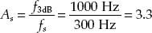
This expression tells us that the normalized stop-band frequency is 3.3 times larger than the normalized −3-dB frequency. Since the normalized graph sets f3dB to 1 rad/s, fs becomes 3.3 rad/s.
Next, take the low-pass filter response from the preceding step and determine which response curve in Fig. 9.6 provides an attenuation of at least −45 dB at 3.3 rad/s. The n = 5 curve does the trick, so you create a fifth-order LC network. Now, the question to ask is, Do you use the π or the T network? Initially, you might assume the π network would be best, since the load and source impedances are equal and since fewer inductors are needed. However, when you apply the transformational trick to get the low-pass filter back to a high-pass filter, you will need to interchange inductors for capacitors and capacitors for inductors. Therefore, if you choose the low-pass T network now, you will get fewer inductors in the final high-pass circuit. The fifth-order normalized low-pass filter network is shown in the figure.
To convert the low-pass into a high-pass filter, replace the inductors with capacitors that have value of 1/L, and replace the capacitors with inductors that have values of 1/C. In other words, do the following:
FIGURE 9.10
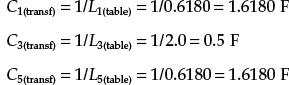
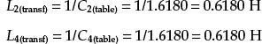
Next, frequency and impedance scale to get the actual component values:
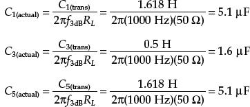
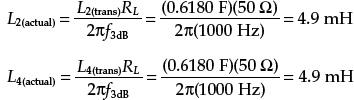
9.6 Passive Bandpass Filter Design
Bandpass filters can be broken down into narrow-band and wide-band types. The defining difference between the two is the ratio between the upper −3-dB frequency f1 and lower −3-dB frequency f2. If f2/f1 is greater than 1.5, the bandpass filter is placed in the wide-type category. Below 1.5, the bandpass filter is placed in the narrow-band category. As you will see in a moment, the procedure used to design a wide-band bandpass filter differs from that used to design a narrow-band filter.
Wide-Band Design
The basic approach used to design wide-band bandpass filters is simply to combine a low-pass and high-pass filter together. The following example will cover the details. Suppose that you want to design a bandpass filter that has −3-dB points at f1 = 1000 Hz and f2 = 3000 Hz and at least −45 dB at 300 Hz and more than −25 dB at 9000 Hz. Also, again assume that the source and load impedances are both 50 Ω and a Butterworth design is desired.
The basic sketch shown here points out the basic response desired. The ratio f2/f1 = 3, which is larger than 1.5, so you do indeed have a wide-band situation. Notice how the sketch resembles low-pass and high-pass response curves placed together on the same graph. If you break up the response into low- and high-phase curves, you get the following results:
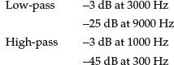
Now, to design the wide-band bandpass filter, construct a low-pass and high-pass filter using the values above and the design technique used in the preceding two example problems. Once you have done this, simply cascade the low-pass and high-pass filters together. The nice thing about this problem is the low-pass and high-pass filters that are needed are simply the filters used in the preceding low-pass and high-pass examples. The final cascade network is shown at the bottom of the figure.
FIGURE 9.11
Narrow-Band Design
Narrow-band filters (f2/f1 < 1.5), unlike wide-band filters, cannot be made simply by cascading low-pass and high-pass filters together. Instead, you must use a new, slightly tricky procedure. This procedure involves transforming the −3-dB band-width (ΔfBW = f2 − f1) of a bandpass filter into the −3-dB frequency f3dB of a low-pass filter. At the same time, the stop-band bandwidth of the bandpass filter is transformed into the corresponding stop-band frequency of a low-pass filter. Once this is done, a normalized low-pass filter is created. After the normalized low-pass filter is created, the filter must be frequency scaled in a special way to get the desired bandpass filter. (The normalized circuit also must be impedance scaled, as before.) When frequency scaling the components of the normalized low-pass filter, do not divide by ω = 2πf3dB, as you would do with low-pass scaling. Instead, the normalized low-pass filter’s components are divided by 2π(ΔfBW). Next, the scaled circuit’s branches must be resonated to the bandpass filter’s center frequency f0 by placing additional inductors in parallel with the capacitors and placing additional capacitors in series with the inductors. This creates LC resonant circuit sections. The values of the additional inductors and capacitors are determined by using the LC resonant equation (see Chap. 2 for the details):
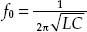
NARROW-BANDWIDTH BANDPASS FILTER EXAMPLE
Suppose that you want to design a bandpass filter with −3-dB points at f1 = 900 Hz and f2 = 1100 Hz and at least −20 dB worth of attenuation at 800 and 1200 Hz. Assume that both the source and load impedances are 50 Ω and that a Butterworth design is desired.
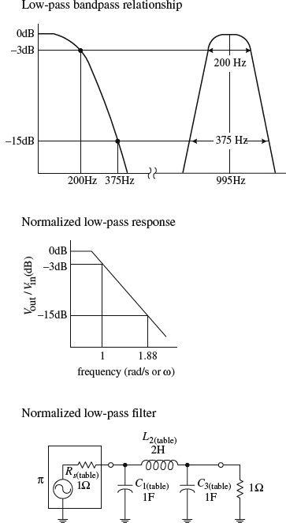
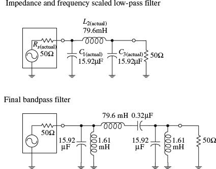
Since f2/f1 = 1.2, which is less than 1.5, a narrow-band filter is needed. The initial step in designing a narrow-band bandpass filter is to normalize the bandpass requirements. First, the geometric center frequency is determined:
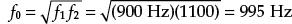
Next, compute the two pair of geometrically related stop-band frequencies by using
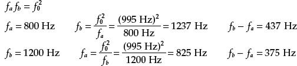
Notice how things are a bit confusing. For each pair of stop-band frequencies, you get two new pairs—a result of making things “geometrical” with respect to f0. Choose the pair having the least separation, which represents the more severe requirement −375 Hz.
The steepness factor for the bandpass filter is given by
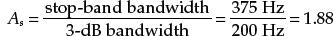
Now choose a low-pass Butterworth response that provides at least −20 dB at 1.88 rad/s. According Fig. 9.6, the n = 3 curve does the trick. The next step is to create a third-order normalized low-pass filter using the π configuration and Table 9.1.
Next, impedance and frequency scale the normalized low-pass filter to require an impedance level of 50 Ω. and a −3-dB frequency equal to the desired bandpass filter’s bandwidth (ΔfBW = f2 − f1)—which in this example equals 200 Hz. Notice the frequency-scaling trick! The results follow:
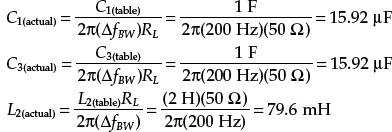
The important part comes now. Each circuit branch of the low-pass filter must be resonated to f0 by adding a series capacitor to each inductor and a parallel inductor to each capacitor. The LC resonant equation is used to determine the additional component values:
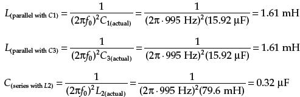
The final bandpass circuit is shown at the bottom of the figure.
FIGURE 9.12
9.7 Passive Notch Filter Design
To design a notch filter, you can apply a technique similar to the one you used in the narrow-band bandpass example. However, now you use a high-pass filter instead of a low-pass filter as the basic building block. The idea here is to relate the notch filter’s −3-dB bandwidth (ΔfBW = f1 − f2) to the −3-dB frequency of a high-pass filter and relate the notch filter’s stop-band bandwidth to the stop-band frequency of a high-pass filter. After that, a normalized high-pass filter is created. This filter is then frequency scaled in a special way—all its components are divided by 2πΔfBW. (This circuit also must be impedance scaled, as before.) As with the narrow-band bandpass filter example, the scaled high-pass filter’s branches must be resonated to the notch filter’s center frequency f0 by inserting additional series capacitors with existing inductors and inserting additional parallel inductors with existing capacitors.
EXAMPLE
Suppose that you want to design a notch filter with −3-dB points at f1 = 800 Hz and f2 = 1200 Hz and at least −20 dB at 900 and 1100 Hz. Let’s assume that both the source and load impedances are 600 Ω and that a Butterworth design is desired.
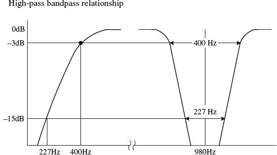
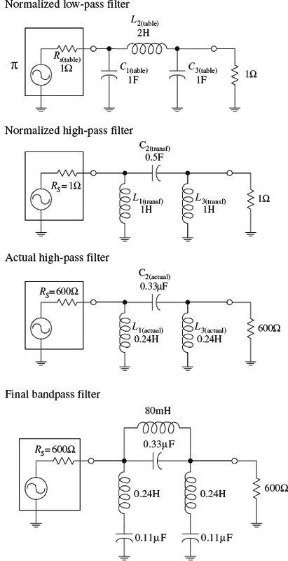
First, you find the geometric center frequency:
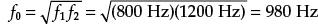
Next, compute the two pairs of geometrically related stop-band frequencies:
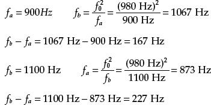
Choose the pair of frequencies that gives the more severe requirement—227 Hz.
Next, compute the notch filter’s steepness factor, which is given by
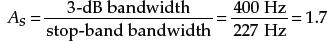
To come up with the final notch filter design, start out by treating the steepness factor as the steepness factor for a high-pass filter. Next, apply the same tricks you used earlier to construct a high-pass filter. Horizontally flip the high-pass response to get a low-pass response. Then normalize the low-pass response (setting the normalized stop frequency to 1.7 rad/s) and use Fig. 9.6 (n = 3 provides at least −20 dB at 1.7 rad/s). Next, use Table 9.1 and the π network to come up with a normalized low-pass design. Then apply the low-pass to high-pass transformational tricks to get a normalized high-pass filter:
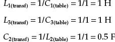
The first three circuits in the figure show the low-pass to high-pass transformational process.
Next, impedance and frequency scale the normalized high-pass filter to require an impedance level of 600 Ω and a −3-dB frequency equal to the desired notch filter’s bandwidth (ΔfBW = f2 − f1)—which in the example equals 400 Hz. Notice the frequency-scaling trick! The results follow:
And finally, the important modification—resonate each branch to the notch filter’s center frequency f0 by adding a series capacitor to each inductor and a parallel inductor to each capacitor. The values for these additional components must be
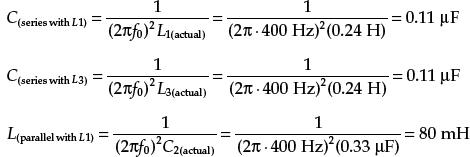
The final circuit is shown at the bottom of the figure.
FIGURE 9.13
9.8 Active Filter Design
This section covers some basic Butterworth active filter designs. I already discussed the pros and cons of active filter design earlier in this chapter. Here I will focus on the actual design techniques used to make unity-gain active filters. To begin, let’s design a low-pass filter.
9.8.1 Active Low-Pass Filter Example
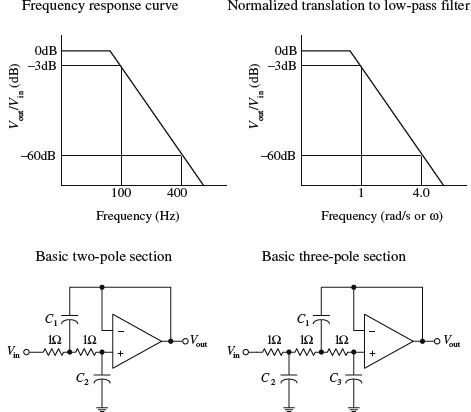
Suppose that you wish to design an active low-pass filter that has a 3-dB point at 100 Hz and at least 60 dB worth of attenuation at 400 Hz—which we’ll call the stop frequency fs.
The first step in designing the filter is to normalize low-pass requirements. The steepness factor is
This means that the normalized position of fs is set to 4 rad/s. See the graphs in Fig. 9.14. Next, use the Butterworth low-pass filter response curves in Fig. 9.6 to determine the order of filter you need. In this case, the n = 5 curve provides over −60 dB at 4 rad/s. In other words, you need a fifth-order filter.
Now, unlike passive filters design, active filter design requires the use of a different set of basic normalized filter networks and a different table to provide the components of the networks. The active filter networks are shown in Fig. 9.14—there are two of them. The one to the left is called a two-pole section, while the one on the right is called a three-pole section. To design a Butterworth low-pass normalized filter of a given order, use Table 9.2. (Filter handbooks provide Chebyshev and Bessel tables as well.) In this example, a five-pole filter is needed, so according to the table, two sections are required—a three-pole and a two-pole section. These sections are cascaded together, and the component values listed in Table 9.2 are placed next to the corresponding components within the cascaded network. The resulting normalized low-pass filter is shown in Fig. 9.15.
FIGURE 9.14
TABLE 9.2 Butterworth Normalized Active Low-Pass Filter Values
The normalized filter will provide the correct response, but the component values are impractical—they’re too big. In order to bring these values down to size, the circuit must be frequency and impedance scaled. To frequency scale, simply divide the capacitor values by 2πf3dB (you need not frequency scale the resistors—they aren’t reactive). In terms of impedance scaling, you do not have to deal with source/load impedance matching. Instead, simply multiply the normalized filter circuit’s resistors by a factor of Z and divide the capacitors by the same factor. The value of Z is chosen to scale the normalized filter components to more practical values. A typical value for Z is 10,000 Ω. In summary, the final scaling rules are expressed as follows:
Taking Z to be 10,000 Ω, you get the final low-pass filter circuit shown at the bottom of the figure.
FIGURE 9.15
9.8.2 Active High-Pass Filter Example
The approach used to design active high-pass filters is similar to the approach used to design passive high-pass filters. Take a normalized low-pass filter, transform it into a high-pass circuit, and then frequency and impedance scale it. For example, suppose that you want to design a high-pass filter with a −3-dB frequency of 1000 Hz and 50 dB worth of attenuation at 300 Hz. What do you do?
The first step is to convert the high-pass response into a normalized low-pass response, as shown in the figure. The steepness factor for the low-pass equivalent response is given by
This means that the stop frequency is set to 3.3 rad/s on the normalized graph. The Butterworth response curve shown in Fig. 9.6 tells you that a fifth-order (n = 5) filter will provide the needed attenuation response. Like the last example, a cascaded three-pole/two-pole normalized low-pass filter is required. This filter is shown in Fig. 9.16.
Next, the normalized low-pass filter must be converted into a normalized high-pass filter. To make the conversion, exchange resistors for capacitors that have values of 1/R F, and exchange capacitors with resistors that have values of 1/C Ω. The second circuit in Fig. 9.16 shows the transformation.
Like the last example problem, to construct the final circuit, the normalized high-pass filter’s component values must be frequency and impedance scaled:
Again, let Z = 10,000 Ω. The final circuit is shown in Fig. 9.17.
FIGURE 9.16
FIGURE 9.17
9.8.3 Active Bandpass Filters
To design an active bandpass filter, it is necessary to determine if a wide-band or narrow-band type is needed. If the upper 3-dB frequency divided by the lower 3-dB frequency is greater than 1.5, the bandpass filter is a wide-band type; below 1.5, it is a narrow-band type. To design a wide-band bandpass filter, simply cascade a high-pass and low-pass active filter together. To design a narrow-band bandpass filter, you have to use some special tricks.
Wide-Band Example
Suppose that you want to design a bandpass filter that has Ω3-dB points at f1 = 1000 Hz and f2 = 3000 Hz and at least −30 dB at 300 and 10,000 Hz. What do you do?
First, confirm that this is a wide-band situation:
Yes it is—it is greater than 1.5. This means that you simply have to cascade a low-pass and high-pass filter together. Next, the response requirements for the bandpass filter are broken down into low-pass and high-pass requirements:
The steepness factor for the low-pass filter is
while the steepness factor for the high-pass filter is
This means that the normalized stop frequencies for both filters will be 3.3 rad/s. Next, use the response curves in Fig. 9.6 to determine the needed filter orders—n = 3 provides over −30 dB at 3.3 rad/s. To create the cascaded, normalized low-pass/high-pass filter, follow the steps in the last two examples. The upper two circuits in the figure show the steps involved in this process. To construct the final bandpass filter, the normalized bandpass filter must be frequency and impedance scaled.
Low-pass section:
High-pass section:
Choose Z = 10,000 Ω. to provide convenient scaling of the components. In the normalized circuit, resistors are multiplied by a factor of Z. The final bandpass filter is shown at the bottom of the figure.
FIGURE 9.18
Narrow-Band Example
Suppose that you want to design a bandpass filter that has a center frequency f0 = 2000 Hz and a −3-dB bandwidth ΔfBW = f2 − f1 = 40 Hz. How do you design the filter? Since f2/f1 = 2040 Hz/1960 Hz = 1.04, it is not possible to used the low-pass/high-pass cascading technique you used in the wide-band example. Instead, you must use a different approach. One simple approach is shown below.
In this example, simply use the circuit in Fig. 9.19 and some important equations that follow. No detailed discussion will ensue.
First, find the quality factor for the desired response:
Next, use the following design equations:
Picking a convenient value for C—which we’ll set to 0.01 μF—the resistors’ values become
The final circuit is shown at the bottom of the figure. R2 can be replaced with a variable resistor to allow for tuning.
FIGURE 9.19
9.8.4 Active Notch Filters
Active notch filters come in narrow- and wide-band types. If the upper −3-dB frequency divided by the lower −3-dB frequency is greater than 1.5, the filter is called a wide-band notch filter—less than 1.5, the filter is called a narrow-band notch filter.
Wide-Band Notch Filter Example
To design a wide-band notch filter, simply combine a low-pass and high-pass filter together as shown in Fig. 9.20.
For example, if you need a notch filter to have −3-dB points at 500 and 5000 Hz and at least −15 dB at 1000 and 2500 Hz, simply cascade a low-pass filter with a response of
3 dB at 500 Hz
15 dB at 1000 Hz
with a high-pass filter with a response of
3 dB at 5000 Hz
15 dB at 2500 Hz
After that, go through the same low-pass and high-pass design procedures covered earlier. Once these filters are constructed, combine them as shown in the circuit in Fig. 9.20. In this circuit, R = 10 k is typically used.
FIGURE 9.20
Narrow-Band Notch Filters Example
To design a narrow-band notch filter (f2/f1 < 1.5), an RC network called the twin-T (see Fig. 9.21) is frequently used. A deep null can be obtained at a particular frequency with this circuit, but the circuit’s Q is only ¼. (Recall that the Q for a notch filter is given as the center or null frequency divided by the −3-dB bandwidth.) To increase the Q, use the active notch filter shown in Fig. 9.22.
Like the narrow-bandpass example, let’s simply go through the mechanics of how to pick the component values of the active notch filter. Here’s an example.
Suppose that you want to make a “notch” at f0 = 2000 Hz and desire a −3-dB bandwidth of ΔfBW = 100 Hz. To get this desired response, do the following. First determine the Q:
FIGURE 9.21
The components of the active filter are found by using
Now arbitrarily choose R and C; say, let R = 10 k and C = 0.01 μF. Next, solve for R1 and K:
Substitute these values into the circuit in Fig. 9.22. Notice the variable potentiometer—it is used to fine-tune the circuit.
FIGURE 9.22
9.9 Integrated Filter Circuits
A number of filter ICs are available on the market today. Two of the major categories of integrated filter circuits include the state-variable and switched-capacitor filter ICs. Both these filter ICs can be programmed to implement all the second-order functions described in the preceding sections. To design higher-order filters, a number of these ICs can be cascaded together. Typically, all that’s needed to program these filter ICs is a few resistors. Using IC filters allows for great versatility, somewhat simplified design, good precision, and limited design costs. Also, in most applications, frequency and selectivity factors can be adjusted independently.
An example of a state-variable filter IC is the AF100 made by National Semiconductor. This IC can provide low-pass, high-pass, bandpass, and notch filtering capabilities (see Fig. 9.23). Unlike the preceding filters covered in this chapter, the state-variable filter also can provide voltage gain.
FIGURE 9.23
For the AF100, the low-pass gain is set using resistors R1 and Rin (gain = −R1/Rin). For the high-pass filter, the gain is set by resistors R2 and Rin (gain = −R2/Rin). (The negative sign indicates that the output is inverted relative to the input.) Setting the gain for the bandpass and notch functions is a bit more complex. Other parameters, such as Q, can be tweaked by using design formulas provided by the manufacturer. A good filter design handbook will discuss state-variable filters in detail and will provide the necessary design formulas. Also, check out the electronics catalogs to see what kinds of state-variable ICs exist besides the AF100.
Switched-capacitor filters are functionally similar to the other filters already discussed. However, instead of using external resistors to program the desired characteristics, switched-capacitor filters use a high-frequency capacitor-switching network technology. The capacitor-switching networks act like resistors whose values can be changed by changing the frequency of an externally applied clock voltage. The frequency of the clock signal determines which frequencies are passed and which frequencies get rejected. Typically, a digital clock signal is used to drive the filter—a useful feature if you are looking to design filters that can be altered by digital circuits. An example of a switched-capacitor IC is National Semiconductor’s MF5 (see Fig. 9.24). By simply using a few external resistors, a power source, and an applied clock signal, you can program the filter for low-pass, high-pass, and bandpass functions. Again, like the state-variable ICs, manufacturers will provide you with necessary formulas needed for selecting the resistors and the frequency of the clock signal.
FIGURE 9.24
Switched-capacitor filters come in different filter orders. For example, the MF4 is a fourth-order Butterworth low-pass filter, and the MF6 is a sixth-order low-pass Butterworth filter; both are made by National Semiconductor. These two ICs have unity passband gain and require no external components, but they do require a clock input. There are a number of different kinds of switched-capacitor filters out there, made by a number of different manufacturers. Check the catalogs.
As an important note, the periodic clock signal applied to a switched-capacitor filter can generate a significant amount of noise (around 10 to 25 m V) present in the output signal. Typically, this is not of much concern because the frequency of the noise—which is the same as the frequency of the clock—is far removed from the signal band of interest. Usually a simple RC filter can be used to get rid of the problem.
Oscillators and Timers
Within practically every electronic instrument there is an oscillator of some sort. The task of the oscillator is to generate a repetitive waveform of desired shape, frequency, and amplitude that can be used to drive other circuits. Depending on the application, the driven circuit(s) may require either a pulsed, sinusoidal, square, sawtooth, or triangular waveform.
FIGURE 10.1
In digital electronics, squarewave oscillators, called clocks, are used to drive bits of information through logic gates and flip-flops at a rate of speed determined by the frequency of the clock. In radio circuits, high-frequency sinusoidal oscillators are used to generate carrier waves on which information can be encoded via modulation. The task of modulating the carrier also requires an oscillator. In oscilloscopes, a sawtooth generator is used to generate a horizontal electron sweep to establish the time base. Oscillators are also used in synthesizer circuits, counter and timer circuits, and LED/lamp flasher circuits. The list of applications is endless.
The art of designing good oscillator circuits can be fairly complex. There are a number of designs to choose from and a number of precision design techniques required. The various designs make use of different timing principles (e.g., RC charge/discharge cycle, LC resonant tank networks, crystals), and each is best suited for use within a specific application. Some designs are simple to construct but may have limited frequency stability. Other designs may have good stability within a certain frequency range, but poor stability outside that range. The shape of the generated waveform is obviously another factor that must be considered when designing an oscillator.
This chapter discusses the major kinds of oscillators, such as the RC relaxation oscillator, the Wien-bridge oscillator, the LC oscillator, and the crystal oscillator. The chapter also takes a look at popular oscillator ICs.
10.1 RC Relaxation Oscillators
Perhaps the easiest type of oscillator to design is the RC relaxation oscillator. Its oscillatory nature is explained by the following principle: Charge a capacitor through a resistor and then discharge it when the capacitor voltage reaches a certain threshold voltage. After that, the cycle is repeated, continuously. In order to control the charge/discharge cycle of the capacitor, an amplifier wired with positive feedback is used. The amplifier acts like a charge/discharge switch—triggered by the threshold voltage—and also provides the oscillator with gain. Figure 10.2 shows a simple op amp relaxation oscillator.
Assume that when power is first applied, the op amp’s output goes toward positive saturation (it is equally likely that the output will go to negative saturation—see Chap. 8 for the details). The capacitor will begin to charge up toward the op amp’s positive supply voltage (around +15 V) with a time constant of R1C. When the voltage across the capacitor reaches the threshold voltage, the op amp’s output suddenly switches to negative saturation (around −15 V). The threshold voltage is the voltage set at the inverting input, which is
The threshold voltage set by the voltage divider is now −7.5 V. The capacitor begins discharging toward negative saturation with the same R1C time constant until it reaches −7.5 V, at which time the op amp’s output switches back to the positive saturation voltage. The cycle repeats indefinitely, with a period equal to 2.2R1C.
FIGURE 10.2
Here’s another relaxation oscillator that generates a sawtooth waveform (see Fig. 10.3). Unlike the preceding oscillator, this circuit resembles an op amp integrator network—with the exception of the PUT (programmable unijuction transistor) in the feedback loop. The PUT is the key ingredient that makes this circuit oscillate. Here’s a rundown on how this circuit works.
Let’s initially pretend the circuit shown here does not contain the PUT. In this case, the circuit would resemble a simple integrator circuit; when a negative voltage is placed at the inverting input (−), the capacitor charges up at a linear rate toward the positive saturation voltage (+15 V). The output signal would simply provide a one-shot ramp voltage—it would not generate a repetitive triangular wave. In order to generate a repetitive waveform, we must now include the PUT. The PUT introduces oscillation into the circuit by acting as an active switch that turns on (anode-to-cathode conduction) when the anode-to-cathode voltage is greater by one diode drop than its gate-to-cathode voltage. The PUT will remain on until the current through it falls below the minimum holding current rating. This switching action acts to rapidly discharge the capacitor before the output saturates. When the capacitor discharges, the PUT turns off, and the cycle repeats. The gate voltage of the PUT is set via voltage-divider resistors R4 and R5. The R1 and R2 voltage-divider resistors set the reference voltage at the inverting input, while the diodes help stabilize the voltage across R2 when it is adjusted to vary the frequency. The output-voltage amplitude is determined by R4, while the output frequency is approximated by the expression below the figure. (The 0.5 V represents a typical voltage drop across a PUT.)
FIGURE 10.3
Here’s a simple dual op amp circuit that generates both triangular and square waveforms (see Fig. 10.4). This circuit combines a triangle-wave generator with a comparator.
The rightmost op amp in the circuit acts as a comparator—it is wired with positive feedback. If there is a slight difference in voltage between the inputs of this op amp, the V2 output voltage will saturate in either the positive or negative direction. For sake of argument, let’s say the op amp saturates in the positive direction. It will remain in that saturated state until the voltage at the noninverting input (+) drops below zero, at which time V2 will be driven to negative saturation. The threshold voltage is given by
where Vsat is a volt or so lower than the op amp’s supply voltage (see Chap. 8) Now this comparator is used with a ramp generator (leftmost op amp section). The output of the ramp generator is connected to the input of the comparator, while its output is fed back to the input of the ramp generator. Each time the ramp voltage reaches the threshold voltage, the comparator changes states. This gives rise to oscillation. The period of the output waveform is determined by the R1C time constant, the saturation voltage, and the threshold voltage:
The frequency is 1/T.
FIGURE 10.4
Now op amps are not the only active ingredient used to construct relaxation oscillators. Other components, such as transistors and digital logic gates, can take their place.
Here is a unijunction transistor (UJT), along with some resistors and a capacitor, that makes up a relaxation oscillator that is capable of generating three different output waveforms. During operation, at one instant in time, C charges through R until the voltage present on the emitter reaches the UJT’s triggering voltage. Once the triggering voltage is exceeded, the E-to-B1 conductivity increases sharply, which allows current to pass from the capacitor-emitter region through the emitter-base 1 region and then to ground. When this occurs, C suddenly loses its charge, and the emitter voltage suddenly falls below the triggering voltage. After that, the cycle repeats itself. The resulting waveforms generated during this process are shown in the figure. The frequency of oscillation is given by
where η is the UJT’s intrinsic standoff ratio, which is typically around 0.5. See Chap. 4 for more details.
Here a simple relaxation oscillator is built from a Schmitt trigger inverter IC and an RC network. (Schmitt triggers are used to transform slowly changing input waveforms into sharply defined, jitter-free output waveforms (see Chap. 12). When power is first applied to the circuit, the voltage across C is zero, and the output of the inverter is high (+5 V). The capacitor starts charging up toward the output voltage via R. When the capacitor voltage reaches the positive-going threshold of the inverter (e.g., 1.7 V), the output of the inverter goes low (∼0 V). With the output low, C discharges toward 0 V. When the capacitor voltage drops below the negative-going threshold voltage of the inverter (e.g., 0.9 V), the output of the inverter goes high. The cycle repeats. The on/off times are determined by the positive- and negative-going threshold voltages and the RC time constant.
The third example is a pair of CMOS inverters that are used to construct a simple squarewave RC relaxation oscillator. The circuit can work with voltages ranging from 4 to 18 V. The frequency of oscillation is given by
R can be adjusted to vary the frequency. I will discuss CMOS inverters in Chap. 12.
FIGURE 10.5
All the relaxation oscillators shown in this section are relatively simple to construct. Now, as it turns out, there is even an easier way to generate basic waveforms. The easy way is to use an IC especially designed for the task. An incredibly popular squarewave-generating chip that can be programmed with resistors and a capacitor is the 555 timer IC.